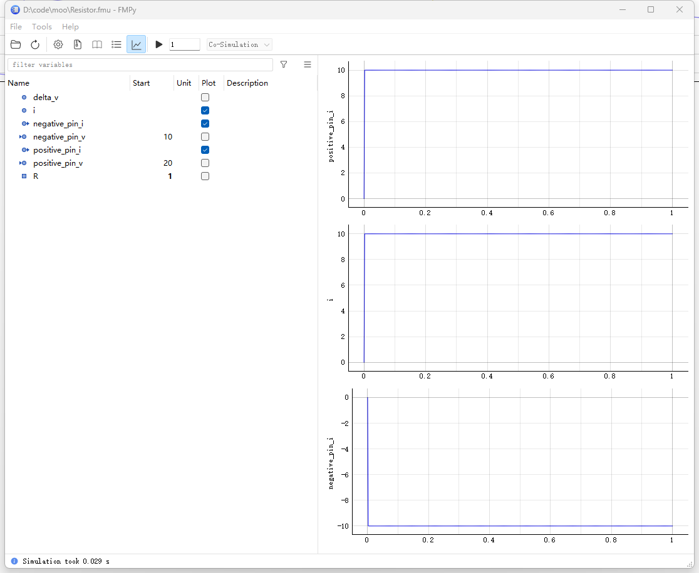

Python FMU 相关
同事在需要在Modelica 中使用状态机建模，并且导出FMU 用于在环测试。苦于Modelica 的语法要求方程个数必须等于变量个数，实现起来比较繁琐。于是谷歌一下Python 的解决方案。结果还发现了新大陆：
Python 生成FMU
NTNU-IHB/PythonFMU 可以将Python 代码嵌入到FMU 中，且支持Windows、Linux 和MacOS，支持到FMU 2.0 标准。原理就是：
- 通过C/C++ 实现了FMU 文件头
- 在具体功能函数中调用Python 文件
在调用FMU 时需要依赖Python 环境，也就是Python 套壳。下面来看一下其项目的定义：
# https://github.com/NTNU-IHB/PythonFMU/blob/master/examples/demoslave.py
from pythonfmu import Fmi2Causality, Fmi2Variability, Fmi2Slave, Real
#
class Resistor(Fmi2Slave):
author = "John Doe"
description = "A simple description"
def __init__(self, **kwargs):
super().__init__(**kwargs)
# 定义变量和初始值
self.positive_pin_v = 20.
self.positive_pin_i = 0.001
self.negative_pin_v = 10.
self.negative_pin_i = 0.001
self.delta_v = 10.
self.i = 0.001
self.R = 10000.
# 注册可变参数，电阻R
self.register_variable(Real("R", causality=Fmi2Causality.parameter, variability=Fmi2Variability.tunable))
# 注册输入输出变量
self.register_variable(Real("positive_pin_v", causality=Fmi2Causality.input))
self.register_variable(Real("positive_pin_i", causality=Fmi2Causality.output))
self.register_variable(Real("negative_pin_v", causality=Fmi2Causality.input))
self.register_variable(Real("negative_pin_i", causality=Fmi2Causality.output))
# 注册本地变量，本地变量
self.register_variable(Real("delta_v", causality=Fmi2Causality.local))
self.register_variable(Real("i", causality=Fmi2Causality.local))
def do_step(self, current_time, step_size):
"""实际任务，会被循环调用"""
self.delta_v = self.positive_pin_v - self.negative_pin_v
self.i = i = self.delta_v / self.R
self.positive_pin_i = i
self.negative_pin_i = -i
return True通过以下命令就可以打包生成Resistor.fmu：
pythonfmu build -f demoslave.pyPython 调用FMU
安装CATIA-Systems/FMPy 并执行python -m fmpy.gui。选择上一步生成的Resistor.fmu 模型，需改参数后可以运行仿真，结果如下图：

连续调用与步长
有时我们需要动态调试，这是就需要手工通过代码来覅用FMPy 了，下面为官方示例：
""" This example demonstrates how continue a simulation e.g. to
retrieve outputs or set tunable parameters at certain intervals while
keeping the FMU instance alive. """
import os
import tempfile
import shutil
import numpy as np
from fmpy import extract, read_model_description, instantiate_fmu, simulate_fmu, plot_result
from fmpy.simulation import apply_start_values
from fmpy.util import download_file
def continue_simulation(fmu_filename):
# extract the FMU to a temporary directory
unzipdir = extract(fmu_filename)
# read the model description
model_description = read_model_description(unzipdir)
# 1. 创建FMU 实例
# instantiate the FMU beforehand, so we can keep it alive
fmu_instance = instantiate_fmu(unzipdir=unzipdir, model_description=model_description)
# 2. 开始第一次仿真
# simulate to 1 s
result1 = simulate_fmu(
filename=unzipdir,
model_description=model_description,
fmu_instance=fmu_instance,
start_values={'e': 0.95}, # 如果不设置stop_time 的话，默认是start_time+1
stop_time=1, # 下面参数表示，不设置停止时间，并且保持FMU 在线
set_stop_time=False, # don't communicate the stop time, so we can continue
terminate=False # keep the FMU instance alive
)
# 3. 修改部分参数
# change a tunable parameter
apply_start_values(fmu=fmu_instance, model_description=model_description, start_values={'e': 0.55})
# 4. 继续第二次仿真
# continue to 2 s
result2 = simulate_fmu(
filename=unzipdir,
model_description=model_description,
fmu_instance=fmu_instance,
initialize=False, # the FMU instance is already instantiated
start_time=1, # start where we left off
stop_time=2,
terminate=False
)
# 绘制结果图像
# concatenate and plot the results
plot_result(np.concatenate((result1, result2)), events=True)
# clean up
fmu_instance.terminate()
fmu_instance.freeInstance()
shutil.rmtree(unzipdir)
if __name__ == '__main__':
archive_filename = download_file(
url='https://github.com/modelica/Reference-FMUs/releases/download/v0.0.23/Reference-FMUs-0.0.23.zip',
checksum='d6ad6fc08e53053fe413540016552387257971261f26f08a855f9a6404ef2991'
)
with tempfile.TemporaryDirectory() as tempdir:
extract(archive_filename, unzipdir=tempdir)
# works also for '1.0/cs' and '2.0'
continue_simulation(os.path.join(tempdir, '3.0', 'BouncingBall.fmu'))扩展
其实有了这些基础之后可以玩点更疯狂的举动，比如在第一节定义FMU 时，我们可以在do_step 内部初始化一个虚拟的微控制器，像AVR 或者ARM。感觉还是要学一下状态机了。
关于PythonFMU 中C++ 调用关系的笔记
PythonFMU 通过fmi-native-export 模块导出FMU 文件（For Co-simulation Only）。其中分为三个部分：
fmi模块表示fmi 标准函数cppfmu中定义了二进制文件的导出（接口）函数，用于和其他程序进行通信pythonfmu中通过C/C++ 调用Python 完成实际的运算
其中承上启下的函数名字是CppfmuInstantiateSlave 定义在pythonfmu/PySlaveInstance.cpp 而在cppfmu/fmi_functions.cpp 中被调用。看命名应该在cppfmu 但其实并不是。
参考资料
- NTNU-IHB/PythonFMU 其中的示例比文档更好懂
- CATIA-Systems/FMPy 同样看示例和函数的注释更好懂一些
- https://fmi-standard.org/ FMI 标准与头文件的下载
- hyumo/qFMU 这个仓库更是硬核，利用
jinja来生成C 代码，进而编译成原生的dll。不过其中关于控制系统的功能还是蛮值得借鉴的